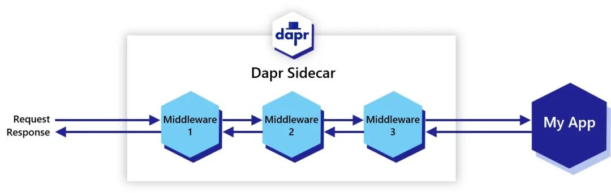
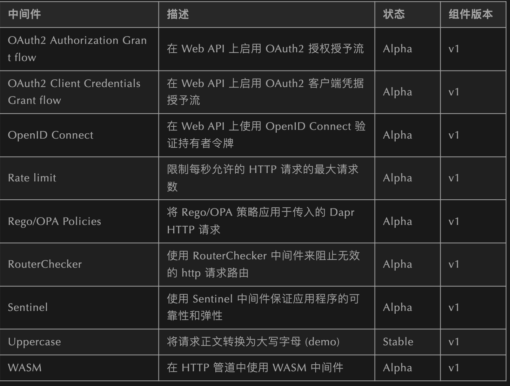
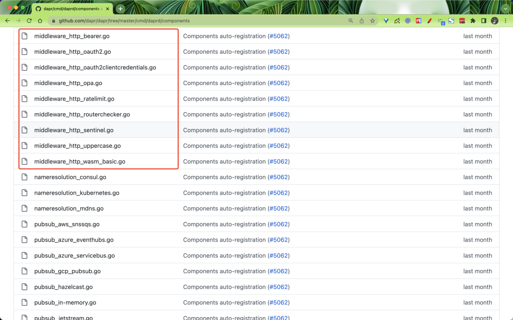
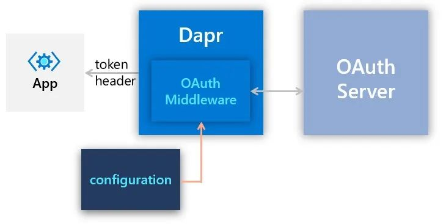
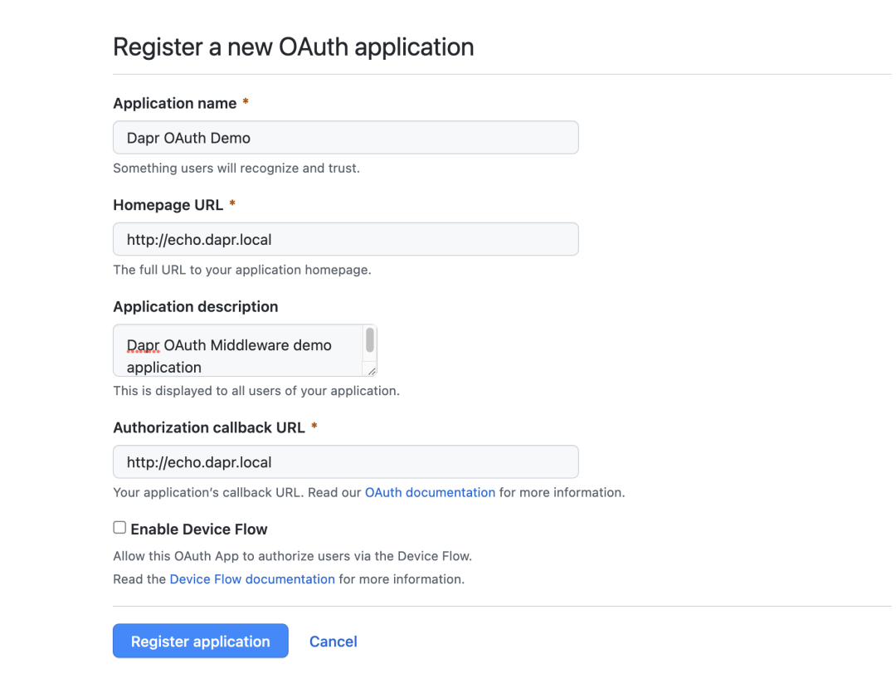
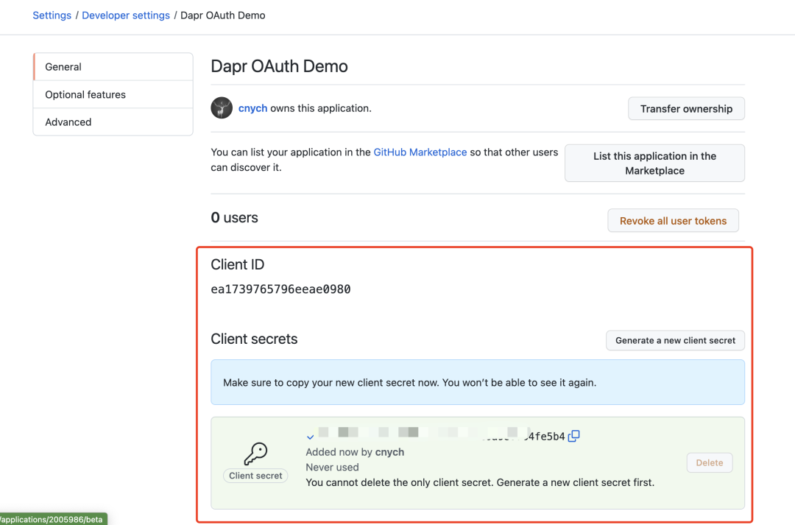
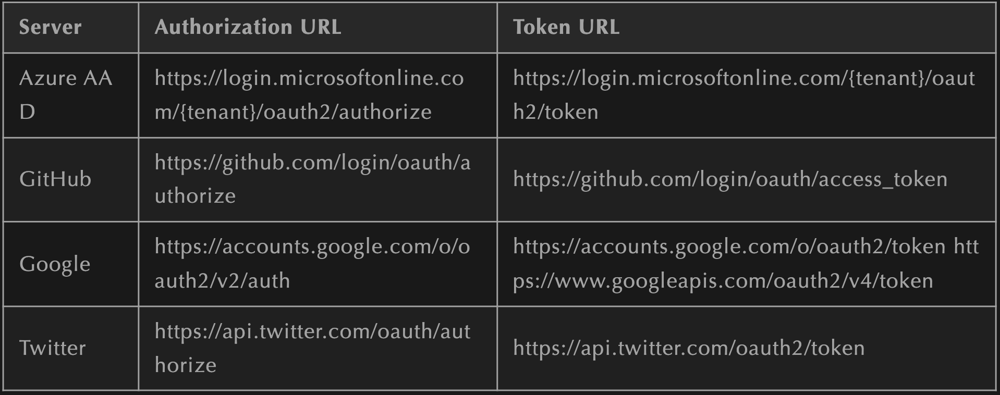
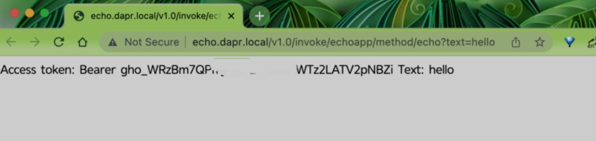

7 Dapr 入门教程之中间件
Dapr 允许通过链接一系列中间件组件来定义自定义处理管道。一个请求在被路由到用户代码之前会经过所有定义的中间件组件，然后在返回到客户端之前以相反的顺序经过定义的中间件。

Dapr 中间件
当启动的时候，Dapr sidecar 会构造一个中间件处理管道。默认情况下，管道由 tracing 中间件和 CORS 中间件组成。
通过 Dapr 配置添加的其他中间件会按定义顺序添加到管道中，该管道适用于所有 Dapr API 端点，包括状态、发布/订阅、服务调用、绑定、安全等。
如以下配置示例定义了一个使用 OAuth 2.0 中间件和大写中间件组件的自定义管道。在这种情况下，所有请求都通过 OAuth 2.0 协议进行授权，并转换为大写，然后再转发给用户代码。
apiVersion: dapr.io/v1alpha1
kind: Configuration
metadata:
name: pipeline
namespace: default
spec:
httpPipeline:
handlers:
- name: oauth2
type: middleware.http.oauth2
- name: uppercase
type: middleware.http.uppercase
与其他构建块组件一样，中间件组件是可扩展的，目前 Dapr 已经支持的中间件如下表所示。

这些中间件的实现源码位可以在 Github 仓库 https://github.com/dapr/components-contrib/tree/master/middleware/http 中找到。
自定义中间件
Dapr 使用 FastHTTP 来实现其 HTTP 服务器，所以自定义的 HTTP 中间件需要编写为 FastHTTP handler，你的中间件需要实现一个如下所示的 Middleware 接口：
package middleware
import (
"github.com/valyala/fasthttp"
)
// Middleware is the interface for a middleware.
type Middleware interface {
GetHandler(metadata Metadata) (func(h fasthttp.RequestHandler) fasthttp.RequestHandler, error)
}
该接口定义了一个返回 fasthttp.RequestHandler 和 error的 GetHandler 方法。
我们自定义的中间件处理程序实现可以包括任何入站逻辑、出站逻辑：
func (m *customMiddleware) GetHandler(metadata Metadata) (func(fasthttp.RequestHandler) fasthttp.RequestHandler, error) {
var err error
return func(h fasthttp.RequestHandler) fasthttp.RequestHandler {
return func(ctx *fasthttp.RequestCtx) {
// 入站逻辑
h(ctx) // 调用下游处理程序
// 出站逻辑
}
}, err
}
然后你可以将你自定义的中间件组件贡献给 components-contrib 存储库。当 components-contrib 接受你的提交后，然后需要在 Dapr 运行时的仓库中的 https://github.com/dapr/dapr/tree/master/cmd/daprd/components 下面添加一个中间件注册文件

比如 uppercase 中间件的注册如下代码所示：
package components
import (
"strings"
"github.com/valyala/fasthttp"
"github.com/dapr/components-contrib/middleware"
httpMiddlewareLoader "github.com/dapr/dapr/pkg/components/middleware/http"
httpMiddleware "github.com/dapr/dapr/pkg/middleware/http"
"github.com/dapr/kit/logger"
)
func init() {
httpMiddlewareLoader.DefaultRegistry.RegisterComponent(func(log logger.Logger) httpMiddlewareLoader.FactoryMethod {
return func(metadata middleware.Metadata) (httpMiddleware.Middleware, error) {
return func(h fasthttp.RequestHandler) fasthttp.RequestHandler {
return func(ctx *fasthttp.RequestCtx) {
body := string(ctx.PostBody())
ctx.Request.SetBody([]byte(strings.ToUpper(body)))
h(ctx)
}
}, nil
}
}, "uppercase")
}
不过我们也可以发现 Dapr 对于中间件的扩展并没有完全放开，如果用户有特定的需求需要将代码在主仓库中进行更新，这势必也降低了灵活性，不过也可以避免因为低质量的中间件造成 Dapr 各种问题。
OAuth 中间件示例
接下来我们配置一个 OAuth 中间件来说明下 Dapr 中中间件的使用方法。
通过配置一个 OAuth 中间件，在不修改应用程序的情况下在 Web API 上启用 OAuth 授权。
这种设计将认证/授权问题从应用程序中分离出来，因此应用程序运维人员可以采用和配置认证/授权提供者而不影响应用程序代码。

这里我们在 K8s 集群中使用 ingress-nginx 作为 ingress 控制器，如果没有安装可以使用下面的 Helm chart 来快速安装：
helm repo add ingress-nginx https://kubernetes.github.io/ingress-nginx
helm install my-release ingress-nginx/ingress-nginx
首先我们编写了一个使用 Node.js 开发的 echoapp，如下所示：
// app.js
const express = require("express");
const bodyParser = require("body-parser");
const app = express();
app.use(bodyParser.json());
const port = 3000;
app.get("/echo", (req, res) => {
var text = req.query.text;
console.log("Echoing: " + text);
res.send("Access token: " + req.headers["authorization"] + " Text: " + text);
});
app.listen(port, () => console.log(`Node App listening on port ${port}!`));
然后编写了一个 /echo 接口，获取了请求 header 头中的 authorization 信息和客户端的请求文本信息。
接下来我们这里使用 Github 来实现认证授权，首先前往 https://github.com/settings/developers 注册一个 OAuth 应用，如下所示：

这里我们指定的应用 URL 为 http://echo.dapr.local，点击 Register application 注册新应用，注册后在应用详情页面可以获取到 clientId 信息，clientSecret 信息需要手动点击 Generate a new client secret按钮获取，将该两个参数值记录下来，后续会使用到。

然后将我们的 echoapp 应用部署到 Kubernetes 集群中去，对应的资源清单如下所示：
apiVersion: apps/v1
kind: Deployment
metadata:
name: echoapp
labels:
app: echo
spec:
selector:
matchLabels:
app: echo
template:
metadata:
labels:
app: echo
annotations:
dapr.io/enabled: "true"
dapr.io/app-id: "echoapp"
dapr.io/app-port: "3000"
dapr.io/config: "pipeline"
spec:
containers:
- name: echo
image: dapriosamples/middleware-echoapp:latest
ports:
- containerPort: 3000
imagePullPolicy: Always
---
apiVersion: networking.k8s.io/v1
kind: Ingress
metadata:
name: echo-ingress
spec:
ingressClassName: nginx
rules:
- host: echo.dapr.local
http:
paths:
- backend:
service:
name: echoapp-dapr
port:
number: 80
path: /
pathType: Prefix
注意上面我们创建了一个 Ingress 对象，用来暴露 echoapp 应用，需要注意的是我们并没有主动创建 Service 对象，而是直接关联的 echoapp-dapr 这个 Service，其 80 端口映射到 echoapp 应用的 dapr sidecar 中的 3500 端口。
另外注意上面为应用添加的注解，其中有一个 dapr.io/config: "pipeline"，这是用来指定使用的配置对象的，所以我们还需要创建一个名为 pipeline 的 Configuration 对象：
apiVersion: dapr.io/v1alpha1
kind: Configuration
metadata:
name: pipeline
spec:
tracing:
samplingRate: "1"
zipkin:
endpointAddress: "http://zipkin.default.svc.cluster.local:9411/api/v2/spans"
httpPipeline:
handlers:
- type: middleware.http.oauth2
name: oauth2
这里我们为 echoapp 应用配置了一个 middleware.http.oauth2 类型的中间件，对应处理器的名称为 oauth2，该处理器对应中 Dapr 中的一个 Component 组件，如下所示
apiVersion: dapr.io/v1alpha1
kind: Component
metadata:
name: oauth2
spec:
type: middleware.http.oauth2
version: v1
metadata:
- name: clientId
value: "<client-id>"
- name: clientSecret
value: "<client-secret>"
- name: scopes
value: ""
- name: authURL
value: "https://github.com/login/oauth/authorize"
- name: tokenURL
value: "https://github.com/login/oauth/access_token"
- name: redirectURL
value: "http://echo.dapr.local"
- name: authHeaderName
value: "authorization"
要使用 Dapr OAuth 中间件，需要配置以下信息：
- Client ID
- Client secret
- Scopes
- Authorization URL
- Token URL
下表是一些比较热门授权服务器的 Authorization/Token URLs：

我们这里使用的 GitHub 的授权服务器配置，还要注意最后添加的 authHeaderName: authorization 属性，上面我们代码中就是从 Header 头从获取的 authorization 的值。
接下来创建上面的所有资源对象即可，创建完成后记得要将 echo.dapr.local 域名映射到 ingress 控制器。
$ kubectl get pods
NAME READY STATUS RESTARTS AGE
echoapp-b7f5469cb-hzvth 2/2 Running 0 51s
$ kubectl get svc
NAME TYPE CLUSTER-IP EXTERNAL-IP PORT(S) AGE
echoapp-dapr ClusterIP None <none> 80/TCP,50001/TCP,50002/TCP,9090/TCP 69m
$ kubectl get ingress echo-ingress
NAME CLASS HOSTS ADDRESS PORTS AGE
echo-ingress nginx echo.dapr.local 192.168.0.52 80 59m
然后接下来我们就可以在浏览器中输入 http://echo.dapr.local/v1.0/invoke/echoapp/method/echo?text=hello 来访问应用中的 echo 方法了，正常访问的时候会出现 502 错误，不符合预期。
这是因为从 Dapr 1.4 版本开始，daprd 进程就被锁定为只接受来自 pod 边界的连接，以实现良好的安全措施。如果要启用外部调用 Dapr，则需要在应用中添加以下注解：
dapr.io/sidecar-listen-addresses: "0.0.0.0"
将该注解添加到 Deployment 中，更新后再次访问 http://echo.dapr.local/v1.0/invoke/echoapp/method/echo?text=hello 就正常了，第一次会跳转到 GitHub 进行授权。
授权后会自动跳转回来，正常就会显示 echo 接口返回的数据，包括 Access Token 的数据和 text 参数的值。

到这里我们就实现了在 Dapr 中为应用启用 OAuth 中间件，对原始应用没有任何侵入性。